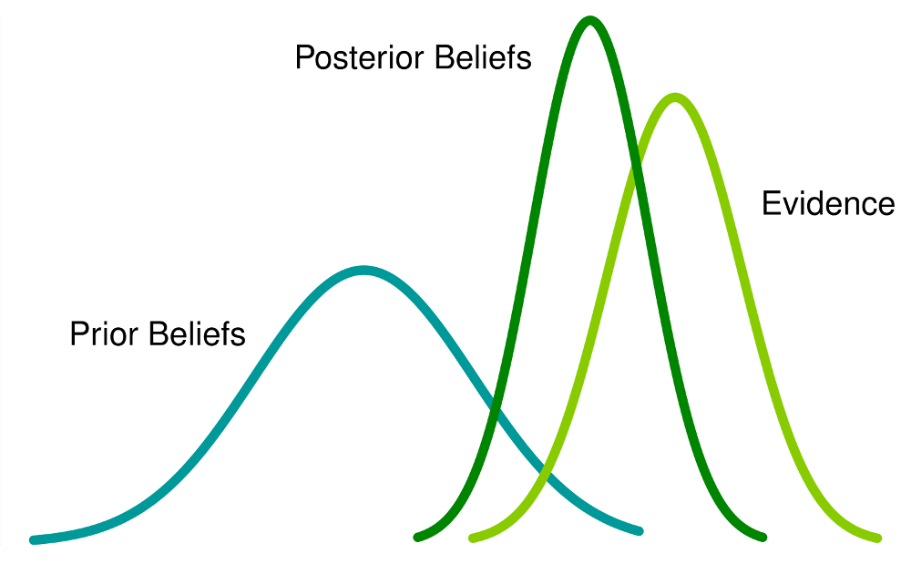

Frequentist vs Bayesian¶
Tianxu Jia
Station10 Ltd
{kind=link}
1. The problem formulation¶
In a marketing campaign, a retailer sends a coupon to the customer. How likely is it that the customer will buy the product? Maybe we should give it a shot since it won’t cost us a lot. Statistically, we can make some experiments, estimate the probability, and then decide how to mark targets based on the results. Global warming is a big topic that is relevant to all people on the planet. As we are an independent thinker, not the ones who follow the crowd, we would like to ask: Is it possible to still do some random experiments for the conclusion? Maybe it is absolutely impossible.
We need impeccable logic and support from data!
Generally speaking, there are two schools of thought in the field of data science and machine learning: the Bayesian and the frequentist. By analyzing their basic assumptions, this blog will explain the theoretical foundations and backgrounds of these two schools.
Suppose there is system\(f_\theta\), \(\theta\) is a vector. The random variable \(X\) is generated from the system.
How to estate the parameter \(\theta\) from the observation \(x\) from frequentist and Bayesian?
2、Frequentist¶

A frequentist believes that the world is determinstic. There is an ontology, and its true value is constant. Our goal is to determine this value or the range in which it lies. However, the true values are unknown. The only way to estimate true values are through the random phenomena that result from them.
In a jar with seven red balls and three blue balls, for example, if we randomly take out one ball and record it before putting it back in the jar. The probability that we will take out the red ball each time is \(70\%\). The probability, no matter how the experiment is performed, is objective and unique. It is this objective fact that underpins the series of observations. Let us assume the unknown probability is \(\theta\) and we can estimate it. If we perform \(100\) experiments and get a red ball \(72\) times, we can intuitively estimate that it is \(72\%\) red, and since there are only \(10\) balls in the jar, we can determine that the most plausable estimation is that there are \(7\) red balls.
This is in fact an optimization problem with a maximum likelihood function.
Suppose the probability of getting out red ball is \(\theta\), which is the Bernolli distribution:
\(x_i = 1\) indicates that we get read ball, and \(x_i = 0\) for blue ball
Suppose we perform \(n\) experiments. In theory, \(\theta\) can take any value between \(0\) and \(1\), including \(0\) and \(1\). This is \(\theta\in[0, 1]\). The \(n\) experiments can produce arbitrary permutations of length \(n\) sequence with elements of \(0\)s and \(1\)s. The total number of sequences is the permutations is \(2^n\). But, after one round of our experiments, we only get one of \(2^n\) possibility in the sequence \(0,1\).
Why did we get this sequence and not any other in one experiment? It is the physical reality that there are \(10\) balls in the jar, \(7\) of which are red balls which makes the observation happened. This objective reality determines \(\theta\), and \(\theta\) in turn determines which sequence is most likely to be observed. That is, \(\theta\) makes the most likely sequence to occur. Represent this idea using mathematical formulation:
For ease of calculation, take the logarithm of the above equation：
Let \(L=-\sum_{i=1}^Nlog(\theta^{x_i}(1-\theta)^{1-x_i})\), and we calculate the derivative of \(L\) with respect to \(\theta\)：
We get:
3. Bayesian¶
{kind=link}
The Bayesian does not attempt to say that ‘events themselves are random’, or that ‘the world is somehow random in its ontology’. It starts from the point of ‘imperfect knowledge of the observer’ and constructs a framework for making inferences based on uncertain of the knowledge.
The random event in the eyes of frequentist is not random any more in the view of Bayesian, but is only unknown to the observer. So, the observer makes inferring from the observed evidence. The randomness is not arising from whether the event itself occurred or not, but merely describes the state of the observer’s knowledge of the event.
Bayesian probabilities are based on limited knowledge, while frequentists describe the ontology. An observer’s knowledge is updated when a new observation is made according to a Bayesian theorem. In Bayesian probability theory, it is assumed that the observer has limited knowledge of the event (for instance, Tom believes a priori that a coin is even based on his daily observations and feelings). Once the observer gets new observations (Tom tosses the coin over and over again and discovers that out of 100 tosses, only 20 come up heads), that will affect the observer’s original beliefs in the form of logical uncertainty (Tom doubts the coin is even and even begins to conclude it is not even). Because incomplete information prevents the observer from relying on simple logic to form inferences, he must turn to plausible reasoning, which assigns plausibility to a range of possible outcomes.
By way of example, Bayesian analysis describes the above process as the observer holding a particular prior belief, gaining new evidence through observation, and combining the new observed evidence and prior knowledge to arrive at a posterior belief, which reflects an updated state of knowledge. Bayesian probabilistic inference is concerned with building a logical system from incomplete knowledge and an assertion as a measure of plausibility. An observer’s beliefs or knowledge about a variable is called a probability distribution by a frequentist. In a Bayesian approach, representations of human knowledge are constructed rather than representations of the objective world. Bayesian probabilistic inference is, therefore, in many cases a better approach to solving the problem of observer inference in machine learning and bypasses the discussion about ontology.
The mathematical representation of the above discussion is:
where,
By using the likelihood function, Bayes’ theorem relates the prior probability to the posterior probability. We can get the maximum posterior probability：
The powerful and fascinating part of Bayesian reasoning is that we start with subjective a priori beliefs and acquire an objective knowledge of the world by objective iterative observation. For example, we can obtain the posterior probabilities by combining evidence and prior probabilities. However, if we receive new evidence again, we can update our posterior probabilities by combining the previously obtained posterior probabilities with the new evidence. It can be is an iterative process.
Below I will use one simple example to show the process of iterative.
Incidence of breast cancer \(0.1\%\) in the some place. If the person has breast cancer, the test positive is \(90\%\) and if the person has no breast cancer, the test nagative is \(90\%\). Suppose, these is a woman, whose the first time test is positive. How much posibility she has breast cancer? How about if the second time her test is still positive? How do you make decision if you were the doctor?
If we have no information, we randomly take one person, who has the probability of \(0.001\) to have breast cancer. This is the prior probability. \(p(c)=0.001\). The person has cancer and the test is positive, which means \(p(+|c) = 0.9\). So \(p(-|c) = 0.1\). If a person has no cancer, the \(p(-|\bar c) = 0.9\) and \(p(-|\bar c) = 0.1\).
So, after the first test is positive.
So, the first test as positive only means that she has 0.9% probability to have cancer. Maybe at this time the doctor can’t confirm the woman has cancer.
How about if the second time is still positive?
We take posterior probability（\(p(c|+) \approx 0.009\)) as the prior probability of second time test. So, \(p(c) = 0.009\) now.
Maybe now the doctor stll can’t confirm the woman has cancer. She will need further test
This example shows the process of how to update our beliefs with new evidence using Bayesian reasoning.
4. Comments¶
We’ll get the method based on how we look at the problem. The frequentist believes that the parameters are objective and do not change, even if they are unknown. The optimization of the likelihood function based on the observations can sometimes produce very extreme results. The Bayesian, on the other hand, believes that all parameters have random values and thus have probability distributions. Bayesian estimates of posterior distributions based on prior knowledge combined with new evidence do not produce extreme results. Because all parameters are random variables with distributions, Bayesians can use some sampling algorithm (e.g., MCMC), making it easier to build complex models.